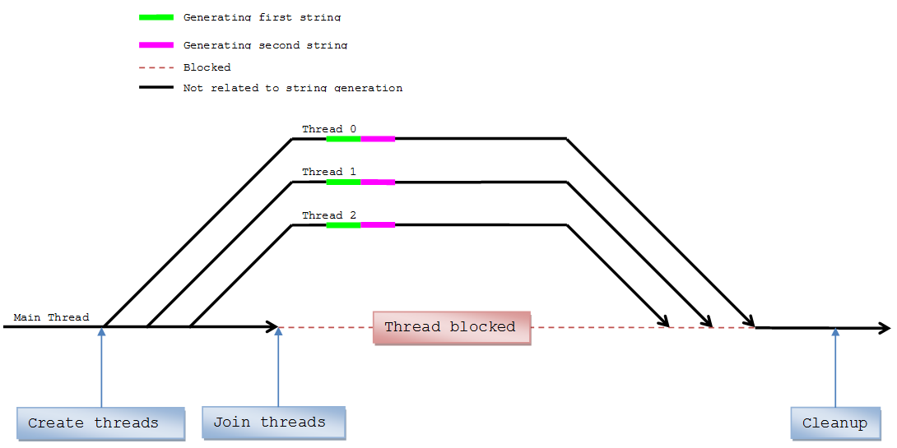
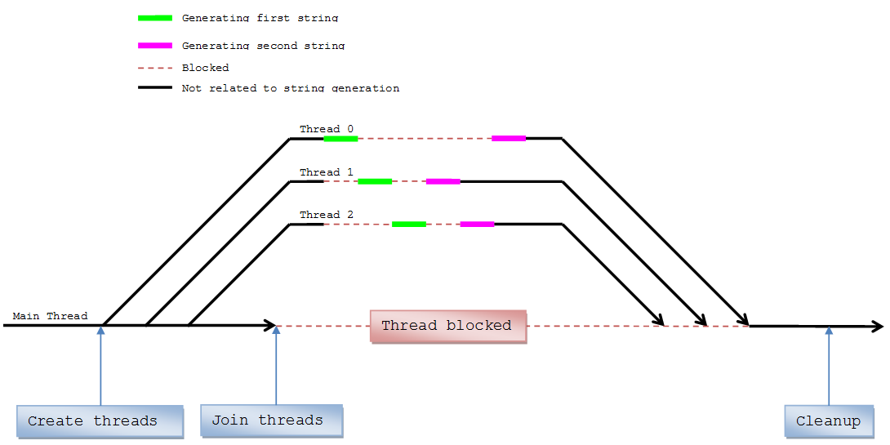
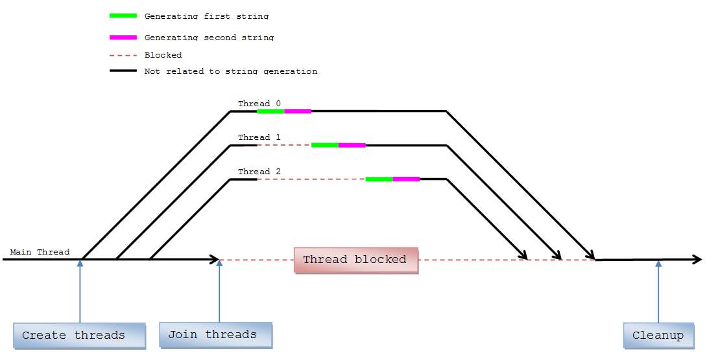

Race Conditions - Lab
Objective
Situations arise where several processes or threads access and manipulate the same data concurrently. The outcome of the execution depends on the particular order in which the accesses take place. This is called a race condition. Your goal is to synchronize sections of the lab code in order to prevent certain race conditions from ever occurring.
Table of Contents
Outcomes
Upon completion of this activity, students should be able to...- Create and use Mutexes
- Create and use Conditional Variables
- Be familiar with Command Line Arguments
Level of Effort
This activity should take approximately 225m to complete. It will require:
- 30m Research
- 15m Prep & Delivery
- 180m Work
If you find that this activity takes you significantly less or more time than this estimate, please contact the teacher for guidance.
Reading & Resources
- Argument Description ( http://msdn.microsoft.com/en-us/library/chfy7caa.aspx
)
- Parsing C Command-Line Arguments ( http://msdn.microsoft.com/en-us/library/a1y7w461.aspx )
- std::thread class ( http://msdn.microsoft.com/en-us/library/vstudio/hh920601.aspx )
- mutex ( http://msdn.microsoft.com/en-us/library/vstudio/hh921467.aspx )
- condition_variable ( http://msdn.microsoft.com/en-us/library/vstudio/hh874761.aspx
)
Visual Aid
 See
instructions
See
instructions
Instructions
The code for this lab is designed with a race
condition that you need to fix in several ways. The program as
delivered to you takes three arguments.
Usage: threadCount sharedStringLength numberOfStringsToGenerate
Arguments:
threadCount
Number of threads to create.
sharedStringLength
Length of string to generate.
numberOfStringsToGenerate
Number of strings to generate per thread.
The code needs to be modified so that an additional command line argument will be used to cause the program to use different ways to solve the problem. The additional argument will have the following values:
0 - run as originally designed
1 - run so each string for a thread is always the same letter
2 - run so a thread does all of its iterations before allowing any other thread to do their iterations
3 - run so
that threads always run in the order thread 0 to thread n
Here is an example of how the modes will run:
Run type 0

Generation and printing of the shared string is not synchronized.
Threads must be able to generate and print the string simultaneously.
Your output will vary.
RaceCondition
3 30 2 0
3 threads, string
sharedStringLength 30, 2 iterations, 0 run_type
Thread 2: BCBCBABCBCBCBABCBCCBCBCBCACACA
Thread 0: BCBCBABCBCBCBABCBCCBCBCBCACACB
Thread 1: BCBCBABCBCBCBABCBCCBCBCBCACACB
Thread 2: BBBBBBBBBBBBBBBBBBBBBBBBBBBAAC
Thread 0: BBBBBBBBBBBBBBBBBBBBBBBBBBBBAA
Thread 1: BBBBBBBBBBBBBBBBBBBBBBBBBBBBBB
Run type 1

Generation and printing of the shared string must be synchronized.
Only one thread at a time may modify and print the shared string. Your
output may vary.
RaceCondition
3
30 2 1
3 threads, string sharedStringLength 30, 2 iterations, 1 run_type
Thread 0: AAAAAAAAAAAAAAAAAAAAAAAAAAAAAA
Thread 1: BBBBBBBBBBBBBBBBBBBBBBBBBBBBBB
Thread 2: CCCCCCCCCCCCCCCCCCCCCCCCCCCCCC
Thread 1: BBBBBBBBBBBBBBBBBBBBBBBBBBBBBB
Thread 2: CCCCCCCCCCCCCCCCCCCCCCCCCCCCCC
Thread 0: AAAAAAAAAAAAAAAAAAAAAAAAAAAAAA
Run type 2
Generation and printing of shared strings must be synchronized. Only
one thread at a time may execute their string generation logic. If
thread 1 begins its work then no other thread may begin working until
thread 1 has completed all of its work. Your output may vary.
RaceCondition
3
30 2 2
3 threads, string sharedStringLength 30, 2 iterations, 2 run_type
Thread 1: BBBBBBBBBBBBBBBBBBBBBBBBBBBBBB
Thread 1: BBBBBBBBBBBBBBBBBBBBBBBBBBBBBB
Thread 0: AAAAAAAAAAAAAAAAAAAAAAAAAAAAAA
Thread 0: AAAAAAAAAAAAAAAAAAAAAAAAAAAAAA
Thread 2: CCCCCCCCCCCCCCCCCCCCCCCCCCCCCC
Thread 2: CCCCCCCCCCCCCCCCCCCCCCCCCCCCCC
Run type 3

Same as run type 2, but threads must execute their work in order of
thread ID. You are required to use a conditional variable for run type
3.
RaceCondition
3
30 2 3
3 threads, string sharedStringLength 30, 2 iterations, 3 run_type
Thread 0: AAAAAAAAAAAAAAAAAAAAAAAAAAAAAA
Thread 0: AAAAAAAAAAAAAAAAAAAAAAAAAAAAAA
Thread 1: BBBBBBBBBBBBBBBBBBBBBBBBBBBBBB
Thread 1: BBBBBBBBBBBBBBBBBBBBBBBBBBBBBB
Thread 2: CCCCCCCCCCCCCCCCCCCCCCCCCCCCCC
Thread 2:
CCCCCCCCCCCCCCCCCCCCCCCCCCCCCC
Student Project Tasks (TODOs)
Students will create and use threads in four different ways based on command arguments.
- Add an additional command line argument for the run type.
- Use threads to simultaneously execute some thread logic.
- Synchronize the thread logic based on the current run type.
- Clean up all used memory.
Rubric

{kind=link}
Frequently Asked Questions
Q: My program doesn't run, it just prints out a message and closes.
A: You're missing the required command line arguments. You can set the default command line arguments to use via 'project properties' -> 'debugging' -> 'Command Arguments'.
Q: The example doesn't run, it just prints out a message and quits.
A: You need to give it command line arguments. To run the example, shift-rightclick the directory containing the
example executable and click 'open command window here'. Type the executable name followed by the
command line arguments. Example: RaceCondition.exe 4 30 2 1
Q: Can I duplicate any of the existing code in ThreadEntryPoint?
A: No.
Q: Can I modify the loop in main to create threads in reverse order?
A: No.
Q: I'm getting errors in the range of C4000 - C4999
A: These are warnings, which means you most likely have Visual Studio setup to treat these warnings as errors.
Open 'property manager' -> 'Debug | Win32' -> 'Microsoft.Cpp.Win32.user' ->'C/C++' -> 'Advanced' -> clear contents of 'Treat specific warnings as errors'
Q: What is the difference between a Mutex and an UniqueLock?
A: A UniqueLock is a wrapper for a Lockable type, such as std::mutex, which controls the life of the Lockable type in the scope where the std::unique_lock was created. The std::unique_lock locks the Lockable type on construction and unlocks it on destruction. You must not manually manipulate the Lockable type when it's being used by the std::unique_lock because the std::unique_lock must know the current state of the Lockable type (locked, unlocked).
Code Conventions
The grader of the lab will enforce some or all of these conventions by penalizing any violations.
- No global, static or atomic types
- No memory leaks
Deliverables
Deliverable File(s) and Contents
You will upload a compressed (Zipped) file named RaceCondition.zip which should include the following.
NOTE: Do not simply move all of the files to the same directory and zip it up. This will break your visual studio solution.
| Part | File Name | Format | Notes |
|---|---|---|---|
| Solution | .\RaceCondition.sln |
.sln | Visual Studio solution. |
| Project |
.\RaceCondition\RaceCondition.vcxproj |
.vcxproj |
Visual Studio project |
| Project Filters |
.\RaceCondition\RaceCondition.vcxproj.filters |
.filters |
Visual Studio project filters |
| Source |
.\RaceCondition\main.cpp |
.cpp |
Your code |